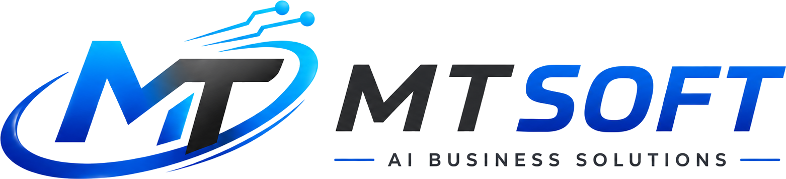
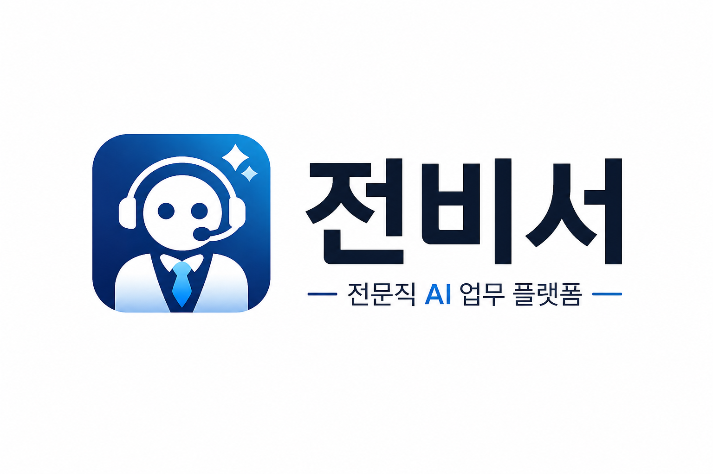

버튼 한 번, 콘텐츠 완성
블로그, 인스타그램, 유튜브 쇼츠 영상 콘텐츠를 AI가 쉽고 빠르게 생성합니다.
- 블로그 글 자동 생성
- SNS 게시글 제작
- 쇼츠 영상 생성
- 이미지 생성 및 이력 관리

AI BUSINESS SOLUTIONS
콘텐츠 제작부터 전문직 업무 지원까지,
누구나 쉽게 사용할 수 있는 AI 비즈니스 솔루션을 제공합니다.
ABOUT MT SOFT
MT Soft는 반복되는 업무와 콘텐츠 제작 과정을 AI로 단순화합니다. 사용자는 어려운 설정 없이 필요한 결과물을 빠르게 얻고, 더 중요한 판단과 실행에 집중할 수 있습니다.
SERVICES
블로그, 인스타그램, 유튜브 쇼츠 영상 콘텐츠를 AI가 쉽고 빠르게 생성합니다.

전비서행정사, 법무사, 노무사, 세무사, 회계사 등 전문직 업무를 지원하는 AI 플랫폼입니다.
VISION
MT Soft는 현장에서 바로 사용할 수 있는 AI 서비스를 만들고, 업무 자동화와 콘텐츠 제작의 새로운 기준을 만들어갑니다.
CONTACT
AI 솔루션 제작, 서비스 도입, 협업 문의는 이메일로 연락해주세요.
hmt0240@naver.com